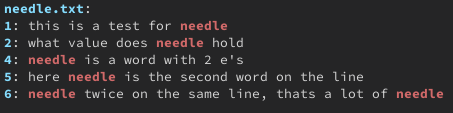
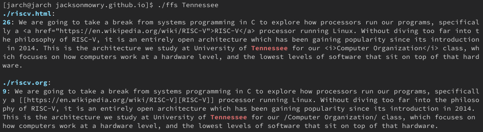
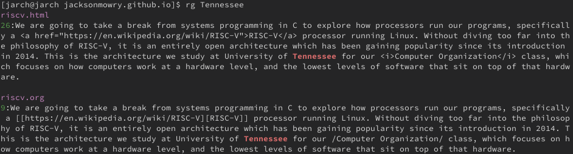

Fast File Search
The code for this article can be found at ffs.c.
Introduction
We have yet to explore multi-threading on our journey of systems programming. Today we are going to change that.
Our goal it builds a simplistic version of grep that searches recursively downwards from the current directory, reporting every line containing some string. We’ll start out building a single threaded searching function, that can later be adapted into a threading model.
Includes
#include <alloca.h> #include <bits/pthreadtypes.h> #include <dirent.h> #include <linux/limits.h> #include <pthread.h> #include <stdbool.h> #include <stdio.h> #include <stdlib.h> #include <string.h> #include <unistd.h> #include <limits.h> #include <stdarg.h>
Searching
In order to find occurrences of a string in a file we can start out by opening a file, and reading it line by line. Each time we find the string the user is searching for we want to output the line number, and highlight the occurrence.
#define CYAN_BOLD "\033[1;36m" #define RED_BOLD "\033[1;31m" #define RESET "\033[0m" void file_search(const char *const filename, const char *const needle) { char output[100000]; size_t output_cap = 100000; size_t output_len = 0; output_len += snprintf(&output[output_len], output_cap - output_len, "%s%s%s:\n", CYAN_BOLD, filename, RESET); FILE *fp = fopen(filename, "r"); if (!fp) { perror("fopen"); return; } char *buf = NULL; size_t len; size_t read; size_t line_number = 0; bool found_something = NULL; while ((read = getline(&buf, &len, fp)) != -1) { line_number++; char *prev = buf; char *found = strcasestr(buf, needle); if (found) { output_len += snprintf(&output[output_len], output_cap - output_len, "%s%lu%s: ", CYAN_BOLD, line_number, RESET); } while (found) { found_something = true; size_t len_before = found - prev; output_len += snprintf(&output[output_len], output_cap - output_len, "%.*s", (int)len_before, prev); output_len += snprintf(&output[output_len], output_cap - output_len, "%s%.*s%s", RED_BOLD, (int)strlen(needle), found, RESET); prev = found + strlen(needle); found = strcasestr(prev, needle); if (!found) { output_len += snprintf(&output[output_len], output_cap - output_len, "%s", prev); } } } if (found_something) { printf("%.*s\n", (int)output_len, output); } free(buf); }
A lot to go over here, but this is the base of our program, and it won’t change much as we move to a multithreaded model.
We first set up a simple buffer that will hold the output of our searching through each file. After that the file is opened, and we begin reading it line by line with getline. We can find occurrences of a string within another string in a case-insensitive manner using strcasestr. This returns a pointer to the first occurrence of that substring, or NULL if it was not found.
It would be nice if our output had some color, we will make the line numbers and file names cyan, and each occurrence of the needle red. From there we can continue looping while strcasestr returns a value. We print everything before the needle, then print the needle itself, making sure the print the actual value from the line to preserve its upper or lower case.
If strcasestr fails to return a value at any point we know we’re done searching, so we can print the remainder of the line. If we have found something in the file we go ahead and print the entire buffer out at once. This conditional allows us to put the filename into the buffer at the beginning, and only print it out if necessary.
The pattern above is going to be important once we multithread our program. In order to ensure that console output does not get jumbled up, each thread will have to acquire a “lock” before printing, and will release it once it’s done. This will guarantee that only one thread attempts to print at a time, and that each file will have its output together.
We can call the above function in our simple program to ensure that it is working.
int main(int argc, char **argv) { if (argc < 3) { printf("usage: %s needle files...", argv[1]); exit(1); } for (int i = 2; i < argc; i++) { file_search(argv[i], argv[1]); } }
Here is a simple file we can test it one.
this is a test for needle what value does needle hold this line should not be output needle is a word with 2 e's here needle is the second word on the line

Great! Just what we expected. Let’s now look at how we can begin to multi-thread our simple program.
pthread
The standard way to create multithreaded programs on unix systems is the pthread library, which stands for posix threads. When compiling a program with pthreads make sure to use lpthread as a compile flag. It provides all the primitives you need to create threads, have them do work, and finally close them down. We won’t be diving into the entire library, just the essential parts you should know.
At a basic level there are 3 major concepts and 1 minor concept when it comes to working with pthreads. A program has one main thread of execution, this doesn’t change from a normal program. From there, any number of threads (up to an operating system or user limit) can be spawned to do work.
Tour of Features
pthread_t
This is the type that represents and individual thread in C. You interact with a thread through using some of the various functions that I will describe below. If you know exactly what you will be using a thread for you can create a single one in your main function and work with it that way.
For most applications you will be using a thread pool. This is no different than an array of any other type, where each element is a thread handle. Common thread pools will be scaled according to the machine they are being run on, or to the task at hand. An important thing to note is that threads do carry some overhead, both in terms of memory usage, and CPU usage if those threads are sitting idle.
Threads (including the main thread) are all running the same program, with their own stack space. This means the address space is shared, and global variables can be accessed from within every thread, this concept will be important later when it comes to synchronization.
pthread_create
Threads must be created before they can be used, and this is done using pthread_create.
pthread_t other_thread; pthread_create(&other_thread, NULL, thread_function, NULL); // OR pthread_t *thread_pool = malloc (NUM_THREADS * sizeof(pthread_t)); for (int i = 0; i < NUM_THREADS; i++) { pthread_create(&thread_pool[i], NULL, thread_function, NULL); }
The function takes 4 arguments, although we will only use 2 for our implementation.
#include <pthread.h> int pthread_create(pthread_t *restrict thread, const pthread_attr_t *restrict attr, void *(*start_routine)(void *), void *restrict arg);
The first is a pointer to a thread type, this can be part of a thread pool, or a singular thread. After that we have attributes, which can be used to set stack size, stack address, scheduling policy, and other values related to a specific thread.
Then we have the most important argument, our startroutine, more commonly known as a thread_function. This is just a common name you will see when across many multithreaded programs. A thread function takes the form of void *thread_function(void *), meaning that it can accept and return any value you would like.
Our last argument is what will be passed to the thread function upon creation. You will commonly see this used to pass in some sort of in/out struct that can be used for 2 way communication while a thread is executing. This argument can be used to return a value, or the tread itself can return a value when it exits.
Thread Function
A thread function will be used as the starting point for the work of a thread. If a thread a spawned, and after finished its work is no longer needed, then it can simply return a value, or call pthread_exit. If a thread is part of a thread pool or is longer living than it will usually take the form of a while(true) loop.
void *thread_function(void *arg) { while (true) { if (time to exit) { return NULL; // or pthread_exit(NULL); } else { // do work } } }
pthread_join
Once all the “work” has been passed out to threads we need to wait for them to finish executing. This is where pthread_join comes into play. Any thread can join any other thread from the same program, although it is most common to see your main thread join over a single thread, or and entire thread pool.
void *return_value; for (int i = 0; i < NUM_THREADS; i++) { pthread_join(thread_pool[i], &return_value); // Do something with return value } free(thread_pool);
A thread will not “join” back with the joining thread until it terminates, and when it does its return value will be placed in retval. Note here that we use the thread_t itself, not a pointer to it.
int pthread_join(pthread_t thread, void **retval);
We won’t cover this here, but it is also possible for a thread to be “cancelled”, which is an external source telling it to stop execution. In that case PTHREAD_CANCELED will be placed in retval.
pthread_join can cause your program to hang if the threads it is waiting on are stuck executing. You must ensure that any threads that you’re waiting will eventually finish executing. We will go over this a bit more once we implement our own thread function, but it is important to step through the logic and ensure it has a valid exit condition.
pthread_mutex_t
A mutex is the simplest, and most common, form of concurrency control in the pthread library. mutex stands for “mutual exclusion”, meaning that a thread has exclusive access to some set of resources. Common patterns have one mutex to control an entire thread pool, with each thread acquiring the mutex for some short period of time when it needs access to some shared resource.
We can interact with a mutex using the lock and unlock functions.
pthread_mutex_t mutex = PTHREAD_MUTEX_INITIALIZER; int pthread_mutex_lock(pthread_mutex_t *mutex); int pthread_mutex_unlock(pthread_mutex_t *mutex);
There are many things in a program that can be considered shared resources. You will commonly see locks around things like input/out, or global/shared data structures. For example, 2 threads that attempt to print at the same time, may end up printing on top of each other, causing a jumbled mess. Or if 2 threads both attempt to access the first element in an array and then remove it, both threads may end up with the actual first element, but the array would see 2 successive calls to pop_front. Meaning that both threads have element 0, but the array has removed 2 elements, element 1 was lost forever.
This is why we use a mutex, or lock, to ensure that only one thread has access to these resources at a time. A thread will lock a mutex, then grab a piece of work off the queue, and finally release the lock. This sounds great! We can just grab locks all over the place to ensure our program is safe right? Not exactly. While yes, it will make your program safe from data races, it will also slow your program down to a crawl.
A mutex internally uses what are known as atomic operations, which are hardware instructions that ensure only one processor has access to read/write the data in question. This is implemented differently on different architectures, but they are almost always more expensive than a regular operation.
Once a thread acquires a lock, every other thread that attempts to acquire the lock will be forced to wait. For this reason, you should only hold a lock for the shortest amount of time possible. All work that can execute without accessing shared resources needs to be done before acquiring the lock, then once the work is done, the lock should be released before continuing.
In our file_search function above you may have noticed that we build up an internal buffer, and print it out in a single line at the end of the function. This is because we will need to acquire the input/output lock before we print.
// .... if (found_something) { pthread_mutex_lock(&io_mutex); printf("%.*s\n", (int)output_len, output); pthread_mutex_unlock(&io_mutex); } // ....
pthread_cond_t
Condition variables are not as common as threads or mutexes, but when your program can make use of them, it makes for a very elegant solution. A condition variable acts as a signal that is used to “wake up” a waiting thread, letting it know that more work is available. If your program uses threads to do a known amount of work and then exit, then condition variables won’t be quite as useful to you. On the other hand, in a long-running program condition variables allow a thread to wait without wasting CPU cycles.
Programs can be written without condition variables, you will just need to create your own strategy to allow a thread to wait for work. One common pattern is called a “spin lock”, where a thread checks for work, and if none is available it loops back around and checks again. This is ok if a thread is only waiting for a short period of time, but is incredibly wasteful if it waits for long periods of time. A spin lock will take a thread up to 100% CPU usage as it loops around as quick as it can checking for work.
To avoid this we can make use of condition variables, which act as the “wake up” call to our waiting threads. When a thread checks for work it has 2 options, it can find work and continue, or it has no work and needs to wait. When a thread needs to wait it calls pthread_cond_wait, which sets its “alarm”, so that it can wake up on time.
int pthread_cond_wait(pthread_cond_t *restrict cond, pthread_mutex_t *restrict mutex);
We call pthread_cond_wait with a pointer to the mutex that we currently have locked, and the condition variable we wish to wait on. The mutex will then be released, and our thread will wait for a signal from the condition variable. Once we are signaled, the mutex will be locked again, and we now know there is work available. We grab our work off the queue, and then release the mutex. While a thread is waiting its CPU usage will drop very low, a much better alternative to a spin lock.
Learning pthread
We’ve covered the major parts of the pthread library, but it will still take a lot of practice to implement them not only correctly, but in a way that speeds up a program.
I find learning multi-threading to be particularly challenging because most programs can’t easily benefit from more threads. Almost every problem can be solved with more threads, but that doesn’t mean that it will make it any faster. Threads are not free, and they bring along a lot of overhead along with them. This is why it is important that you benchmark your code with and without threads to decide which variant is faster. You may be surprised by how much a single thread of execution can do on its own.
Implementation
Having said all of that, our goal here is to create a fast file searching program, which lends itself very well to a multithreaded approach. Each file will be assigned its own thread from the pool, which can then parse the file for the needle independently.
Output Buffer
Of course, our 100000 byte statically allocated buffer will probably work just fine for searching most files, but it won’t cover every possible case. We’ll create a dynamically allocated buffer to take care of this.
#define MAX(a, b) ((a) > (b) ? (a) : (b)) typedef struct buffer { char *buffer; size_t len; size_t cap; } buffer; void buffer_resize(buffer *b, size_t added_size) { if (b->len + added_size > b->cap) { b->cap += MAX(4096, added_size); b->buffer = realloc(b->buffer, b->cap); if (!b->buffer) { perror("realloc"); exit(1); } } } void buffer_write(buffer *b, const char *format, ...) { va_list args; va_start(args, format); int length = vsnprintf(NULL, 0, format, args) + 1; va_end(args); va_start(args, format); buffer_resize(b, length ); b->len += vsprintf(&b->buffer[b->len], format, args); b->buffer[b->len] = '\0'; va_end(args); }
We can use this buffer to replace the static array from before.
void file_search(const char *const filename, const char *const needle) { buffer b = (buffer){.buffer = malloc(128), .len = 0, .cap = 128}; buffer_write(&b, "%s%s%s:\n", CYAN_BOLD, filename, RESET); // .... char *prev = buf; char *found = strcasestr(buf, needle); if (found) { buffer_write(&b, "%s%lu%s: ", CYAN_BOLD, line_number, RESET); } while (found) { // .... size_t len_before = found - prev; buffer_write(&b, "%.*s", (int)len_before, prev); buffer_write(&b, "%s%.*s%s", RED_BOLD, (int)strlen(needle), found, RESET); prev = found + strlen(needle); // .... if (!found) { buffer_write(&b, "%s", prev); } // .... if (found_something) { pthread_mutex_lock(&io_mutex); printf("%s\n", b.buffer); pthread_mutex_unlock(&io_mutex); } // .... free(b.buffer); free(buf); return; }
Work Queue
Our first step is to track all the work that needs to be done. Each thread will take different amounts of time to parse their respective files, so we place all the work on the queue, and then lets the threads pull work off as they are free. This is a very specific implementation of a queue, and its behavior specifically applies to this program. A more generic queue can be used if desired.
struct node { struct node *next; char *name; }; typedef struct node node_t; node_t *head = NULL; node_t *tail = NULL; void enqueue(char *entry) { node_t *newnode = malloc(sizeof(node_t)); newnode->name = entry; newnode->next = NULL; if (tail == NULL) { head = newnode; } else { tail->next = newnode; } tail = newnode; } // dequeue returns dirent* or NULL char *dequeue(void) { if (head == NULL) { return NULL; } else { char *result = head->name; node_t *temp = head; head = head->next; if (head == NULL) { tail = NULL; } free(temp); return result; } }
The basic premise here is that a queue has a front and a back, called head and tail the above code. Items are placed at the tail of the list, and removed from the front of the list, that is the entire interface. When an item is inserted we allocate memory for its node, and place it into the list by updating the tail pointer, or the header pointer if the list is empty.
When an item is removed from the list we want to return the string value directly, but we first grab a handle to the node, so we can free its memory. From there we update the links in the list and return the value. In the case the list is empty we return NULL, which signifies that our work queue is empty.
Locking Strategy
Our program will require 2 pieces of synchronization between our threads. We need to have a mutex for our work queue, and a mutex for printing to the terminal. The queue mutex ensures that only one job is pulled off the queue at a time, and that jobs are added to the queue atomically. The input/output mutex ensures that an entire threads output is printed cleanly.
Luckily, our program is a special case where all the work is placed into the queue up front, and then our thread pool just needs to go through the work until it is empty. Therefore, we won’t have to use condition variables to alert a thread there is work to be done, we can just sit and spin until work shows up. Once again, this only works in short-lived programs where we do not anticipate threads sitting around and waiting for work (as in a web server).
pthread_mutex_t q_mutex = PTHREAD_MUTEX_INITIALIZER; pthread_mutex_t io_mutex = PTHREAD_MUTEX_INITIALIZER; bool terminate_work = false;
We create 2 mutexes, and a third global variable to track when we should terminate work. This variable will be used by our thread_function telling it to spin while terminate_work is false, and terminate once it is true.
Adding Work
In our case the “work” that we want to do is scan files, so each item in the queue should be a path to a file. Like we said before, we want to scan the current directory for files, and recursively scan its subdirectories. In C we get the contents of a directory through opendir, which through the use of readdir gives a pointer to each item in the directory. You can think of this as running ls in the terminal, and being given back a pointer to a struct representing each of the items.
// Recursively scans a directory placing all files // on the work queue void handle_dir(const char *dir_path) { DIR *dir; struct dirent *entry; dir = opendir(dir_path); if (!dir) { perror("opendir"); exit(1); } // continued below // ....
We start with a directory path as a string, which will be "." to start, indicating the current directory where the program is being run. The directory is then opened and error checked. Then we need to walk through each entry in the directory, placing it directly on the work queue if it is a file, or recursively scanning if it is a directory.
// .... // continued from above while ((entry = readdir(dir))) { char path[PATH_MAX]; sprintf(path, "%s/%s", dir_path, entry->d_name); if (entry->d_type == DT_REG) { pthread_mutex_lock(&q_mutex); enqueue(strdup(path)); pthread_mutex_unlock(&q_mutex); } else if (entry->d_type == DT_DIR && strcmp(entry->d_name, ".") != 0 && strcmp(entry->d_name, "..") != 0) { handle_dir(path); } } closedir(dir); }
Calling readdir(dir) yields the next entry from the directory. We assign this to the entry variable, and continue looping while its value is non-null. Our next step is to create a string representation of its path, which we can do by appending the name of the entry onto the current path. This means the file temp.txt in a subdirectory foo will result in a path of ./foo/temp.txt.
If we are looking at a file we push its path onto the work queue by creating a copy of the path. Otherwise, if we’re looking at a subdirectory we call ourselves again to repeat the process until we get to a directory with nothing but files.
You may notice that we acquire the q_mutex, then add our work on the queue, before finally releasing the lock. We will see why this is necessary later in main. For now, it is important to know that even though a queue has 2 ends which seem independent, when a queue has 1 element or is empty the ends begin to interact with each other. So when calling either enqueue or dequeue we need to lock the q_mutex.
file_search
Other than adding an automatically resizing buffer we also need to make one small change to this function, simply locking the io_mutex before printing, and releasing it once we’re done.
// .... if (found_something) { pthread_mutex_lock(&io_mutex); printf("%.*s\n", (int)output_len, output); pthread_mutex_unlock(&io_mutex); } // ....
thread_function
Finally we can get to doing the work in our threads. Upon being created, each thread will enter a loop where they check for work, loop if none is found, and process a file if one is available.
We will also use our terminate_work flag here to signal to a thread that if there is no work on the queue, and you are being told to terminate work, then you can go ahead and exit.
void *thread_function(void *arg) { char *needle = (char*)arg; while (true) { char *filename; pthread_mutex_lock(&q_mutex); if (!terminate_work && head == NULL) { pthread_mutex_unlock(&q_mutex); continue; } if (terminate_work && head == NULL) { pthread_mutex_unlock(&q_mutex); break; } filename = dequeue(); pthread_mutex_unlock(&q_mutex); if (filename) { file_search(filename, needle); free(filename); } } pthread_exit(NULL); }
Each thread will acquire the q_mutex and check for work by seeing if head is NULL. Once a thread has the lock it is free to check and/or modify any of the shared structures that mutex is protecting. In our case we make a decision based upon the value of terminate_work and the presence of work in the queue.
If a thread finds work it can grab that filename off of the queue, and then release the lock allowing other threads to continue execution. By first acquiring the lock we guarantee that the state of the queue will not change until we release it. This is why it is so important that both enqueue and dequeue are only called while the q_mutex is held.
Our 2 conditional checks have different behavior. If we want our thread to continue working we call continue, otherwise if we want to exit we break out of the infinite loop. This lands our thread at pthread_exit(NULL), which allows the thread to now be joined on from main. Telling our threads to continue can be wasteful, but we will only be in this state for a very short period of time before work is placed onto the queue.
The last thing to note here is that since each filename was cloned with strdup, its memory needs to be freed. After we call file_search we no longer need that filename, and we’re safe to free it.
main
Now we can work to put everything together in main.
We can start out with a simple usage statement that helps our users use the CLI.
int main(int argc, char **argv) { if (argc < 2) { printf("usage: %s needle", argv[0]); exit(1); } // continued below // ....
The string we are searching for is called our “needle”, and it is expected to the in argv[1]. We want to pass this needle to each thread, so we store it in a variable to give it some semantic meaning aside from argv[1].
// .... char *needle = argv[1]; // ....
As I said before, it is common to scale the number of threads to the number of CPUs available on a machine. When our program starts up it will ask the operating system how many CPUs is has, and then we create a thread pool of that size.
// .... long num_cpu = sysconf(_SC_NPROCESSORS_CONF); if (num_cpu <= 0) { fprintf(stderr, "Error determining the number of CPUs.\n"); exit(1); } pthread_t *thread_pool = alloca(num_cpu * sizeof(pthread_t)); for (int i = 0; i < num_cpu; i++) { pthread_create(&thread_pool[i], NULL, thread_function, (void*)needle); } // ....
After calling sysconf we have the number of CPUs available, which we error check to ensure it is a value that makes sense.
We then create a thread pool of type pthread_t*, which has its memory allocated with alloca. alloca is another allocation function similar to malloc, but instead of getting memory from the heap, we dynamically get memory from the stack. It is a very interesting function that allows for a stack allocation of a size that is only known at runtime. Since the memory resides on the stack, that also means that there is no need to call a free function, the memory is automatically cleaned up.
Each thread is created with our thread function, with their only argument being the needle itself. To avoid any type warnings we must cast our needle to a void* since that is what the type the thread_function accepts. We will type cast this back to a char* in our thread function.
Now all of our threads are spinning, waiting for work, so let’s give them something to work on.
// .... handle_dir("."); terminate_work = true; // ....
Because handle_dir is recursive, we only need to give it an entry point, and it does all the work from there. This leaves our main function very clean, only having to specify the current directory with ".".
The work queue is now being filled up, and at the same time the threads are churning through the files as fast as they can. As soon as handle_dir returns we know all the work has been added to the queue, at that point we can tell our threads to terminate work. However, they won’t immediately stop working. Our thread_function will only exit when it is told to terminate and there is no work left on the queue.
If we finished main off now we would be missing some of our output, so we need to wait for each thread to finish working. We can do that with pthread_join.
// .... for (int i = 0; i < num_cpu; i++) { pthread_join(thread_pool[i], NULL); } } // end of main
That’s it! No need to clean up any memory from our thread pool because it was stack allocated!
Let’s see how this works in a real directory structure.

We can compare that to ripgrep, which is a program that has a mode with very similar features to our implementation.

Speaking of ripgrep it has another feature that allows it to filter any input given to it on stdin
[jarch@jarch jacksonmowry.github.io]$ ls | rg ".txt" analysis.txt needle.txt
We should be able to adapt our program to match this functionality.
Extending FFS
A program can tell if it has input coming in on stdin (through a pipe) by using isatty. If you remember from our shell, piping between processes uses pipes and file descriptors to send output from one program to the input of another. isatty allows us to compare our programs input pipe to stdin. If we are using stdin that means the input is from a terminal, otherwise our input is coming from a pipe.
// .... // main above char *needle = argv[1]; if (!isatty(fileno(stdin))) { // pipe stdin_search(needle); exit(0); } long num_cpu = sysconf(_SC_NPROCESSORS_CONF); // ....
If we determine our input is coming from stdin we can jump immediately to that function. The main reason I wanted to include this example is to show how just adding multithreading to a program can greatly increase its complexity. Compare our original file_search with the following.
void stdin_search(const char *const needle) { char *buf = NULL; size_t len; size_t read; while ((read = getline(&buf, &len, stdin)) != -1) { char *prev = buf; char *found = strcasestr(buf, needle); while (found) { size_t len_before = found - prev; printf("%.*s", (int)len_before, prev); printf("%s%.*s%s", RED_BOLD, (int)strlen(needle), found, RESET); prev = found + strlen(needle); found = strcasestr(prev, needle); if (!found) { printf("%s", prev); } } } free(buf); return; }
No mutexes to mess with here. We just scan through our input line by line and output the lines that match with the needle highlighted.
Takeaways
Implement the simple single-threaded solution first and see if it fits your needs. If you don’t, you may find that your multithreaded solution doesn’t offer a speed-up for your use case. There are a few things to look for when determining if a program can benefit from multi-threading.
User Interface
Apps that render any sort of live user interface often benefit from separating rendering and application logic to different threads. This way any heavy computation on one thread does not slow the user interface to a crawl. Chat apps may have one thread to listen for incoming messages, another to send messages, and yet another to render the messages.
Independent Inputs
This is the category that our FFS program falls under. Each input to our find function is an entirely separate file, they share nothing in common other than their location in the file system. If you have used ripgrep before, or were following along and running the code here, you may have noticed that the output from either is non-deterministic. This is because threads are scheduled by the operating system, and when a thread is spawned it may be backgrounded for a brief time, while another more important thread is run.
Each time the program is run we may get a different ordering of files. We are ok with this tradeoff because each file it treated as its own entity, which is searched independently of other files. That is not to say that programs requiring a specific output order cannot also use multi-threading, those problems just require extra work to maintain ordering.
If a single-threaded program has numerous inputs that are currently being processed one-by-one with no relation to the previous item processed, it may be a good candidate for multithreaded.
Large Inputs
If each item in a large set is being processed one after the other, there may be a chance to split that set up in to smaller sets for processing. This is a hard one to get right, as it requires much more careful control over mutual exclusion, which may slow the program down.
I/O Bound
Our program also falls into this category, to a much lesser extent. In terms of speed reading from a file, or printing output to the terminal are much slower than the rest of the program. So a program may benefit from having separate threads of execution so that while one thread is waiting on a file to open, another can be doing a heavy computation.
Socket Servers
Most servers that communicate over a socket architecture will benefit from having more handlers for those sockets. Imagine a web server able to handle 1 concurrent connection, versus a server able to handle 12 concurrent connections. Not only will these speed up average response times for you users, you will also allow your code to scale much better across different architectures.
Hopefully we will be building a simple socket server coming up very soon!
Conclusion
We built a simple program that can find any line from stdin or a file containing a specified string. Our program started out with a single-threaded implementation, which we then easily changed to take advantage of all the available CPU threads. The task at hand was relatively simple, we just had to fit it within our concurrency control model using mutexes.
The framework that we set up can be used as a starting point to solve many problems with multi-threading. Break the problem down into its simplest form, and solve in first as a function that run single-threaded. Then take the time to find a data structure that fits the problem well, and create a thread function that can interact with that data structure.
Most problems take a lot of work to benefit from multi-threading, but when you find a good candidate you can massively improve performance. Take some time to explore a few old programs that you’ve written to see how you can adapt them to a multithreaded paradigm.
The code for this article can be found at ffs.c.